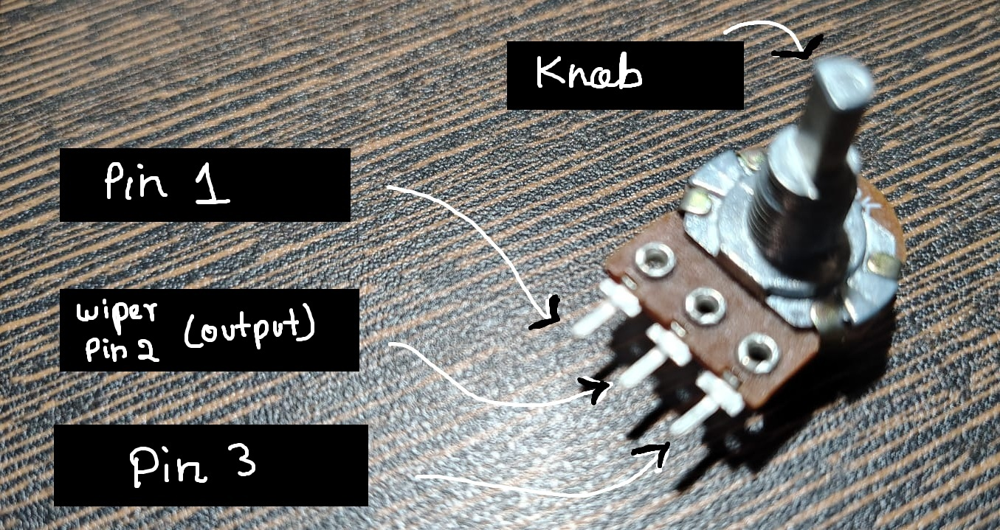
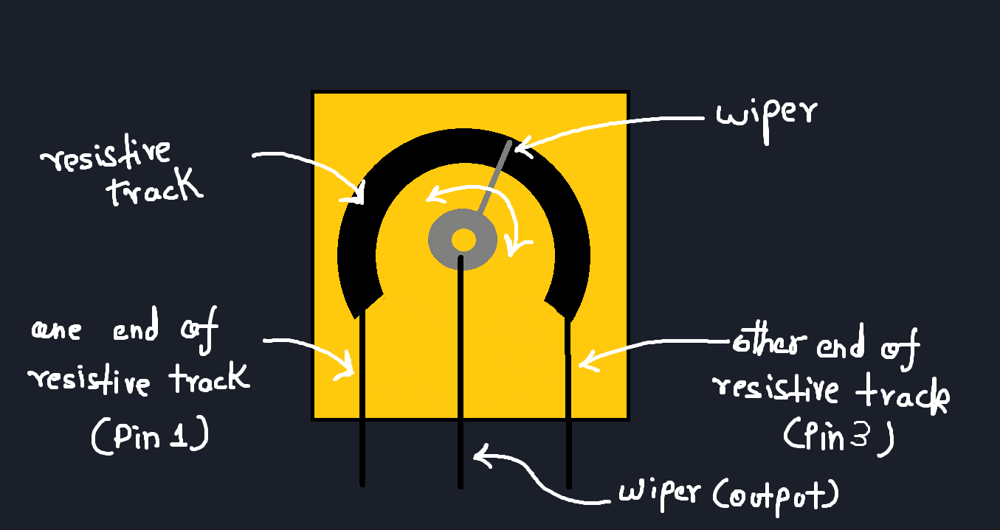
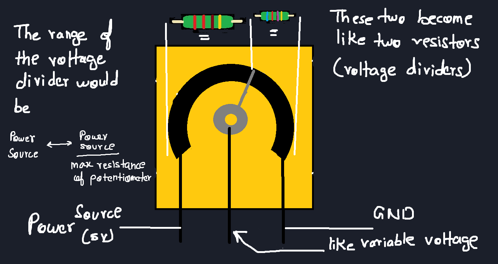
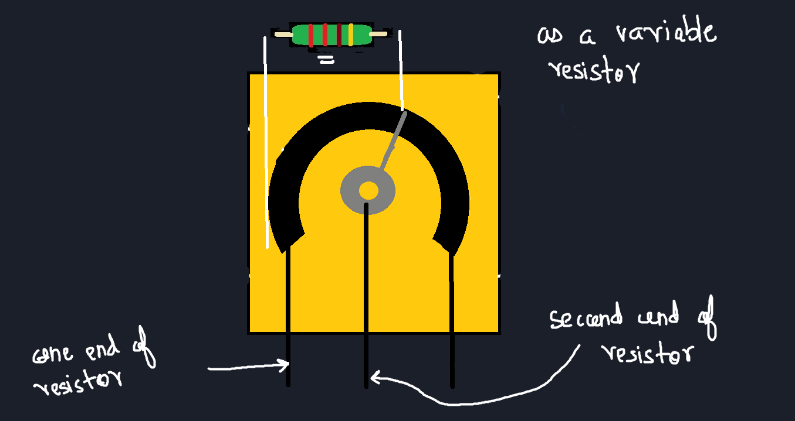
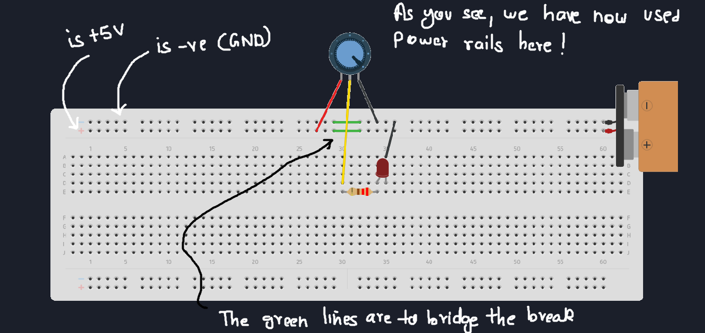
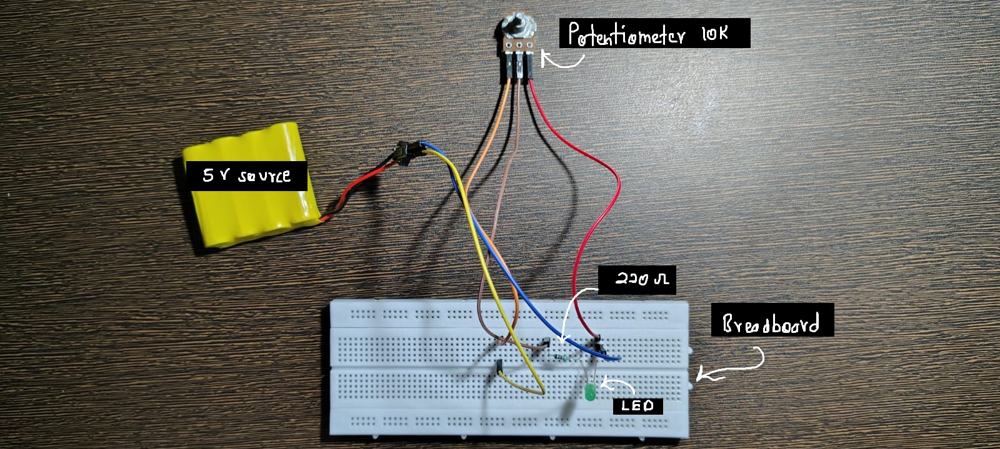

The One-Line Definition
A potentiometer is a resistor whose value you can change manually.
In simple words:
What a Potentiometer Really Is
From the outside, a potentiometer looks simple:
a knob and three pins.
Inside, it’s even simpler.
Inside a potentiometer
Internally, a potentiometer has:
A resistive track
A wiper (metal contact)
A rotating shaft that moves the wiper
When you rotate the knob:
The wiper slides along the resistive track
The resistance between pins changes continuously
Nothing digital.
Nothing smart.
Just metal sliding on resistance.
The Three Pins
A potentiometer always has three pins:
Pin 1 → One end of resistive track
Pin 2 (Middle) → Wiper
Pin 3 → Other end of resistive track
The middle pin is the most important one.
It is the output of the potentiometer.
Two Ways to Use a Potentiometer
This is where most confusion happens.
🔹 1) Potentiometer as a Voltage Divider
This is the most common and most useful mode.
How it’s connected
One end → 5V
Other end → GND
Middle pin → Output
Now the potentiometer splits the voltage.
What happens when you rotate it
Knob left → output near 0V
Knob right → output near 5V
Anywhere in between → proportional voltage
The potentiometer is acting as a manual voltage divider.
This is how:
Volume knobs work
Brightness controls work
Speed knobs work
🔹 2) Potentiometer as a Variable Resistor
Here, we use only two pins:
One end pin
The middle (wiper) pin
The potentiometer now behaves like a resistor whose value changes as you rotate it.
This mode is useful when:
You want to control current
You want to tune a value
You want adjustment, not absolute voltage
This is often called a rheostat configuration.
⚠️ Important Real Circuits Insight
If the circuit draws current:
The output voltage can shift
The divider assumption breaks
We’ll see this clearly in later posts.
🧪 Practical Circuit
Components Required
Potentiometer (10k recommended)
LED
Resistor (220Ω–330Ω)
Breadboard
Wires
Power source
Circuit Idea
Potentiometer controls voltage
LED brightness changes smoothly
Circuit Diagram:
Completed Circuit:
Video Demo:
Live demo of Potentiometer LED Brightness Control
What to observe
Brightness changes smoothly
No sudden jumps
Human hand controls analog behavior
🧠 What Beginners Usually Miss
Middle pin is the output
End pins can be swapped (direction reverses)
Cheap pots are noisy
Wiper contact is imperfect
Dirt causes jitter
If brightness flickers:
- It’s mechanical, not logical
🔗 Where This Leads Next
Potentiometers are often used as:
Inputs to microcontrollers
Manual tuning elements
Calibration tools